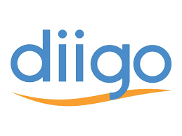
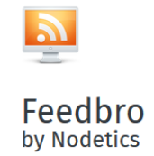

Veille
Technologique.
Sujet : Les langages de programmation
Présentation : Un langage de programmation est un ensemble de règles permettant d’écrire du code compréhensible par un ordinateur. Il sert à donner des instructions pour exécuter des tâches spécifiques.
Utilité : Les langages de programmation sont utilisés dans tous les domaines comme le Développement web, Applications mobiles, IA, Jeux vidéo...
Évolution : Au fil du temps beaucoup de langages sont apparus et d’autres ont disparus. Les langages de programmation évoluent sans cesse et répondent aux besoins du moment comme la sécurité ou Python avec l’IA.
Exemples : Python pour l’IA, C/C++ pour les jeux vidéo, JavaScript pour le développement web, Rust pour la sécurité...

Bornage de la Veille
Outils de Veille Utilisés
(Cliquez sur les images pour voir les détails)
1. Google Alerts
Le plus efficace grâce aux nombreux mots clés précis.
2. Zotero & Connector
Pratique, automatique, gestion bibliographique et flux RSS.
3. Diigo
Sauvegarder, annoter des pages. Moins complet que Zotero.
4. Feedbro
Extension navigateur simple pour suivre des flux RSS.
5. Feedly
Agrégateur de flux RSS, interface simple.
Actualités Analysées
Le créateur du C++ s'en remet à sa communauté pour sauver son langage
Suite à l’importance de la cybersécurité de plus en plus présente, Bjarne Stroustrup du C++ remet en question son langage. Il souhaite que la communauté renforce la sécurité, qui depuis plusieurs années selon les experts en cybersécurité, fait défaut au C++. Le créateur a donc proposé le framework Profiles qui pourrait avoir une meilleure gestion de la mémoire. Malheureusement ce n’est pas la solution miracle car elle divise notamment à cause de la limitation des fonctionnalités que pourrait avoir ce framework et d’autres alternatives ne sont pas à exclure.
Préparer Rust pour l'aérospatiale et la défense
La croissante popularisation de Rust commence à intéresser des domaines comme l’aérospatiale, la défense, le médical ou autre ce qui va mettre de côté le C++ et le C. C’est la sécurité et la gestion de mémoire qui ont permis cela à Rust mais de nombreux clients hésitent à passer à un projet avec Rust.
Google Docs prend désormais en charge plusieurs langages (HTML, CSS)
Google a décidé d’ajouter le HTML, CSS, C# et bien d’autres, dans la fonction blocs de code dans Google Documents. Il suffit d’aller dans Insérer des éléments de construction -> blocs de code, et de choisir le langage. Cela va aider les développeurs qui utilisent activement Google Docs pour des rédactions techniques ou autres en intégrant du code de manière claire.
Pourquoi Google Code Assist est peut-être l'outil qu'il vous faut
Google a revu Google Code Assist et l’a considérablement amélioré notamment dans la compréhension du contexte du code ce qui aide grandement dans la génération de blocs de code. Voici les différentes fonctionnalités améliorées : Migrer le code, Implémenter de nouvelles fonctionnalités depuis GitHub, Effectuer des revues de code, Générer des tests et créer de la documentation.
Java fête ses 30 ans, une histoire marquée par le procès Google vs Oracle
Java a été créé il y a 30 ans déjà et est aujourd’hui encore un pilier des langages de programmation. L’article aborde le procès entre Oracle et Google, où Oracle accusait Google d’avoir utilisé du code Java sans licence pour développer Android. En 2021, la Cour suprême des États-Unis a tranché en faveur de Google, estimant que cette utilisation relevait du « fair use ». Ce procès a soulevé des questions sur la protection des API par le droit d’auteur.
Rust a 10 ans : né d'une panne d'ascenseur
Rust, le langage de programmation créer par Graydon Hoare a maintenant 10 ans. Hoare a décidé de créé Rust, en 2015, suite à une panne d’ascenseur à cause d’erreurs logicielles, avec une meilleure sécurité et efficacité. Au fil du temps Rust devient de plus en plus apprécié par les développeurs grâce à sa sécurité mémoire.
Rust vs Go : quel langage pour 2025 ?
Rust et Go sont deux langages de programmation en forte croissance. Rust est utilisé par plus de 2,3 millions de développeurs surtout pour sa gestion de mémoire, sa sécurité, pas de data races, langages compilés mais il reste un langage difficile à apprendre. Concernant Go il est plus simple à apprendre et est utile pour le cloud, le web, les IoT, les CLI. Rust est donc à prioriser pour un haut niveau de sécurité et Go pour un développement et déploiement rapides.
Rust débarque enfin dans le noyau Linux
Le noyau Linux va intégrer Rust avec la version 6.15 avec l’ajout du premier driver graphique, NOVA développé par Red Hat, écrit en Rust pour les GPU NVIDIA RTX 2000 et +. Il promet d’être plus stable, plus sûr et plus performant. Cette nouvelle est très controversée avec d’un côté les défenseurs de Rust et de l’autre les puristes du C. Rust pourrait réduire jusqu’à 70% des vulnérabilités courantes du noyau.
Le développement de PHP 8.5.0 a démarré
Une nouvelle version de PHP (la 8.5.0) est en cours de développement et est en phase de test. La 2ème alpha est déjà disponible mais la version finale est prévue pour le 20 novembre. Parmi les nouveautés il y a l’introduction du pipe operator (|>) qui va permettre d’enchaîner plusieurs fonctions de manière lisible, l’ajout de array_first() et array_last() pour le premier et derniers éléments d’un tableau, il y a aussi [NoDiscard] pour qu’une fonction retourne une valeur qui ne doit pas être ignorée.
5 tâches à ne jamais confier à l’IA
L’IA prend de plus en plus de place chez les développeurs mais elle reste pour certains cas pas assez efficace, voici 5 tâches concernées : Le manque de raisonnement contextuel / La cybersécurité / Les données sensibles / Optimisation fine / Collaboration humaine. Pour ces raisons ne pas se fier à l’IA dans certains cas est primordial.
JetBrains veut créer un nouveau langage
JetBrains souhaite créer un nouveau langage de programmation qui n’a pas encore de nom qui a pour but de favoriser l’utilisation de l’IA et le développement multiplateforme. Ce langage serait un dérivé de Kotlin et en anglais.
Node.js intègre enfin le support de TypeScript en natif
Il est désormais possible d’exécuter et de lire directement les fichiers .ts sans passer par une étape de compilation manuelle. Node.js retire simplement les annotations de types (string, number...) et transforme le code en JavaScript exécutable. C’est ce que l’on appelle le type stripping. Cela rend la création de projets plus rapide et plus facile pour les débutants. Une grande réaction positive a lieu dans la communauté.
Les progrès de Rust pour les pilotes Windows avancent, mais ne sont pas encore prêts
Le développement de pilotes Windows en Rust progresse grâce aux efforts de Microsoft et de la communauté pour renforcer la sécurité mémoire. Bien que de nouveaux outils facilitent désormais leur création, ces pilotes ne sont pas encore considérés comme prêts pour une mise en production massive. L'intégration continue, notamment dans le noyau de Windows 11 24H2, mais nécessite encore des abstractions de sécurité plus robustes avant d'être généralisée.
La Fondation Rust dévoile son laboratoire d'innovation
La Fondation Rust lance le "Rust Innovation Lab", une nouvelle structure destinée à soutenir le développement des projets open source critiques de l'écosystème Rust. Le premier projet à en bénéficier est Rustls, une alternative moderne et sécurisée à OpenSSL. Cette initiative vise à fournir des ressources financières et logistiques pour garantir la pérennité et la sécurité des briques logicielles essentielles écrites en Rust.
GitHub Copilot : l'assistant IA qui transforme la programmation
Depuis son lancement, GitHub Copilot a révolutionné le quotidien des développeurs en s'appuyant désormais sur le modèle GPT-5 d'OpenAI. Il ne se contente plus de compléter le code, mais agit comme un véritable agent capable de générer des structures applicatives entières et de s'adapter aux règles spécifiques d'un projet. Les études montrent un gain de productivité de 55%, permettant aux développeurs de se concentrer davantage sur la logique métier que sur la syntaxe répétitive.
.NET 10 : Optimisations majeures du JIT et du code
Avec l'arrivée de .NET 10, Microsoft pousse encore plus loin les performances grâce à des centaines d'améliorations dans le compilateur JIT (Just-In-Time) et le Garbage Collector. L'article détaille comment l'inlining intelligent et le PGO (Profile-Guided Optimization) réduisent drastiquement le temps d'exécution et l'allocation mémoire. Ces optimisations montrent que même sur des langages managés comme C#, la maîtrise des couches basses reste cruciale pour la performance.
En 2025, TypeScript détrône Python et devient le langage n°1 sur GitHub
Le rapport annuel Octoverse de GitHub révèle un tournant historique : TypeScript est désormais le langage le plus utilisé sur la plateforme, dépassant pour la première fois Python et JavaScript. Cette ascension fulgurante est directement liée à l'essor de l'IA : le typage fort de TypeScript facilite grandement la génération de code fiable par des assistants comme GitHub Copilot, rendant le développement plus robuste et maintenable.
PHP 8.5 : Un code plus lisible et un parseur modernisé
Confirmant les annonces précédentes, cette mise à jour de PHP 8.5 introduit un nouveau parseur d'URL conforme aux standards internationaux, remplaçant l'ancienne fonction obsolète pour une meilleure fiabilité des API et du routage. L'article détaille également l'optimisation des fonctions Internet (Curl) et confirme l'arrivée de l'opérateur "Pipe" pour simplifier la syntaxe séquentielle, rendant le code plus fluide et facile à maintenir.
Mise en application
Développement de programmes algorithmiques identiques en C, Python et JavaScript.
Mesure et comparaison du temps d'exécution et de la consommation mémoire.
Vérification de la pertinence de chaque langage selon les contraintes (Vitesse vs Facilité).